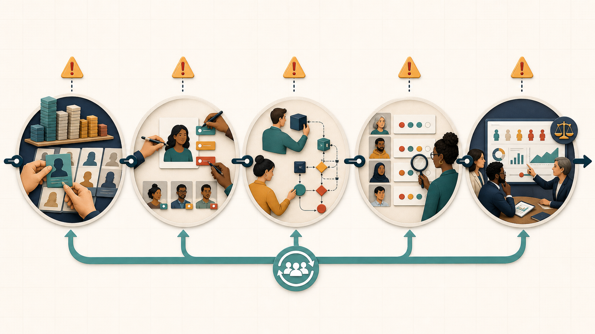

Problem framing
Define users, affected groups, exclusions, constraints, and potential harms before selecting a solution.
Project 04 · Engineering Leadership & Responsible AI
A practical operating approach for making technical decisions more evidence-based, inclusive, transparent, and accountable.

Professional Relevance
This work demonstrates my ability to connect responsible-AI principles with mechanical engineering practice. It moves beyond general awareness of cognitive bias and defines concrete leadership controls for problem framing, design review, testing, approval, human oversight, and ongoing monitoring.
Leadership Commitment
Build decision processes that make assumptions visible, invite challenge, test relevant conditions, record tradeoffs, and create a path for review.

Lifecycle Risk
Human assumptions shape data selection, labeling, design choices, testing, and interpretation. A system can therefore reproduce or amplify bias even when no one intends a harmful outcome. Continuous, cross-functional review is more effective than treating fairness as a one-time final check.
Define users, affected groups, exclusions, constraints, and potential harms before selecting a solution.
Review provenance, coverage, definitions, disagreement, missingness, and known limitations.
Compare alternatives against pre-agreed criteria instead of defending the familiar option.
Evaluate subgroup results, environments, loads, edge cases, misuse, and failure modes.
State uncertainty, limitations, human responsibilities, escalation paths, and monitoring triggers.
Engineering Context
Teams may favor test results that support an invested design.
Control:Predefine acceptance criteria and investigate disconfirming evidence.
Standards and datasets may represent limited users or conditions.
Control:Test the actual user range, operating envelope, and boundary conditions.
Senior or confident voices may dominate evidence and frontline expertise.
Control:Score independently and invite junior, operator, and technician input first.
AI or simulation output may receive more trust than its assumptions justify.
Control:Verify against physical evidence, domain knowledge, and independent methods.
BIAS-AWARE Method
Define the decision, users, context, and failure consequences.
Make data, model, design, and environmental assumptions visible.
Include cross-functional, frontline, safety, and user perspectives.
Evaluate alternatives independently before group discussion.
Test failure modes, edge cases, misuse, and uncertainty.
Compare safety, performance, cost, access, and maintainability.
Name decision, review, operation, and escalation owners.
Document dissent, exceptions, and unresolved risks.
Monitor incidents, drift, feedback, and changing conditions.
Client Engagement
Clarify objectives, affected people, error costs, and current influence patterns.
Review data, standards, testing, participation, and decision records.
Introduce independent scoring, broader reviews, testing, and exception rules.
Assign monitoring owners and revisit decisions when evidence changes.
Full Artifact
Explore the playbook, reusable checklist, original discussion, and sources.
Professional Foundation
Tool Disclosure